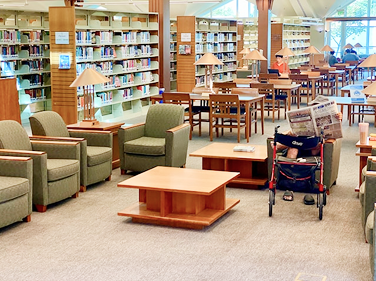
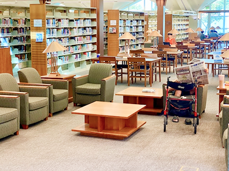

圖書館簡介
前身為日治時代新竹州圖書館、新竹縣立圖書館，民國八十五年隨新竹縣立文化中心落成啟用而遷移至現址。整體建築包含圖書館主要閱覽區、自修室與故事城堡，形塑出傳統聚落建築之型態，並以潛園、寶庫、穀倉的意象，展現靜態、人性尺度、多角落之空間設計。
館藏數量
圖書：398765冊 、期刊：56種、DVD：2348部、CD：5682片
空間資訊
閱讀座位：348席 、 視聽座位：50席
開館時間
圖書館
週二至週五 09:00 至 20:30 (借還書至 20: 10)
週六至週日 09:00 至 17:00 (借還書至 16: 40)
每日閉館前20分鐘，停止辦證、借書及還書服務
自修室(閱報室)
週二至週日08:30-20:30
休館日
週一全天 、 民俗節日（農曆除夕、春節、清明節、端午節、中秋節）及國定假日、 選舉日